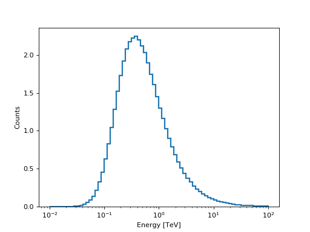

CountsPredictor¶
-
class
gammapy.spectrum.CountsPredictor(model, aeff=None, edisp=None, livetime=None, e_true=None)[source]¶ Bases:
objectCalculate number of predicted counts (
npred).The true and reconstructed energy binning are inferred from the provided IRFs.
Parameters: model :
SpectralModelSpectral model
aeff :
EffectiveAreaTableEffectiveArea
edisp :
EnergyDispersion, optionalEnergyDispersion
livetime :
QuantityObservation duration (may be contained in aeff)
e_true :
Quantity, optionalDesired energy axis of the prediced counts vector if no IRFs are given
Examples
Calculate prediced counts in a desired reconstruced energy binning
from gammapy.irf import EnergyDispersion, EffectiveAreaTable from gammapy.spectrum import models, CountsPredictor import numpy as np import astropy.units as u import matplotlib.pyplot as plt e_true = np.logspace(-2,2.5,109) * u.TeV e_reco = np.logspace(-2,2,73) * u.TeV aeff = EffectiveAreaTable.from_parametrization(energy=e_true) edisp = EnergyDispersion.from_gauss(e_true=e_true, e_reco=e_reco, sigma=0.3, bias=0) model = models.PowerLaw(index=2.3, amplitude=2.5 * 1e-12 * u.Unit('cm-2 s-1 TeV-1'), reference=1*u.TeV) livetime = 1 * u.h predictor = CountsPredictor(model=model, aeff=aeff, edisp=edisp, livetime=livetime) predictor.run() predictor.npred.plot_hist() plt.show()
Methods Summary
apply_aeff()apply_edisp()integrate_model()Integrate model in true energy space run()Methods Documentation
{kind=link}
{kind=link}